Misión
Brindar soluciones integrales en seguridad, salud ocupacional y ambiente que protejan a las personas y fortalezcan la continuidad de las empresas.
Un aliado para fortalecer la prevención, la preparación y la gestión responsable dentro de cada organización.

“Protección integral para empresas preparadas, seguras y sostenibles.”
OcuPro 360 acompaña a organizaciones que buscan fortalecer su prevención y su capacidad de respuesta mediante soluciones integrales en salud ocupacional y ambiente.
Una forma de trabajo basada en anticipar riesgos, comprender cada organización y acompañar los procesos de principio a fin.
Estos textos sirven como base para visualizar la sección y podrán reemplazarse por la redacción oficial de OcuPro 360.
Brindar soluciones integrales en seguridad, salud ocupacional y ambiente que protejan a las personas y fortalezcan la continuidad de las empresas.
Ser un referente de confianza en prevención, preparación y protección empresarial mediante un servicio cercano y especializado.
Conocemos las necesidades, condiciones y prioridades de la empresa.
Identificamos oportunidades de mejora y definimos el alcance requerido.
Coordinamos la solución, capacitación, plan o certificación acordada.
Damos seguimiento para sostener la prevención en el tiempo.
Explore las áreas de servicio disponibles dentro de OcuPro 360.